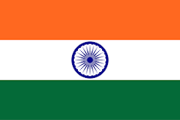

Introduction :

The Indian Cricket Team represents India in international cricket. It is governed by the Board of Control for Cricket in India (BCCI). India is one of the strongest teams in the world and has produced many famous cricketers. Cricket is the most popular sport in India.
India became a full member of the International Cricket Council (ICC) in 1926 and played its first Test match in 1932 against England.
Formats of Cricket Played by India
The Indian cricket team plays cricket in three main formats:
1. Test Cricket
- Longest format of cricket
- Played for 5 days
- Each team plays two innings
- Players wear white clothes
- Played with a red ball
2. One Day International (ODI)
- Match of 50 overs per team
- Played in one day
- Players wear colored jerseys
- Played with a white ball
3. Twenty20 International (T20I)
- Shortest format of cricket
- 20 overs per team
- Very fast and entertaining
- Played mostly at night under lights
Information:
- 🏆 ICC Cricket World Cup: 1983, 2011
- 🏆 ICC T20 World Cup: 2007
- 🏆 ICC Champions Trophy: 2002, 2013
Strong team in all formats